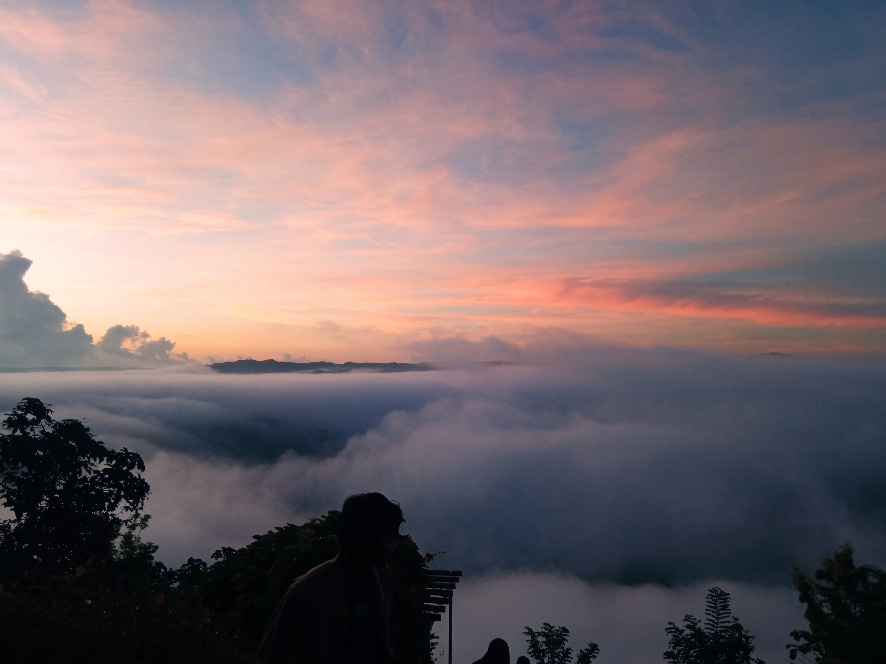
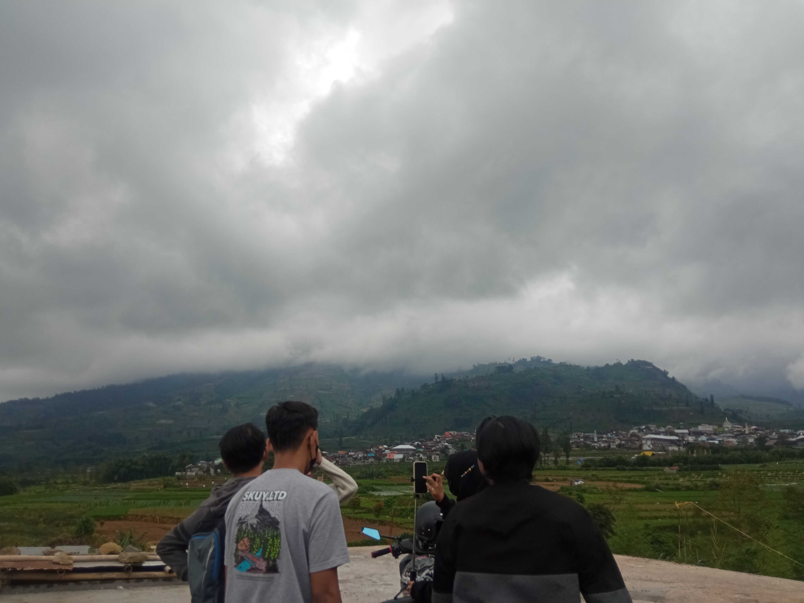
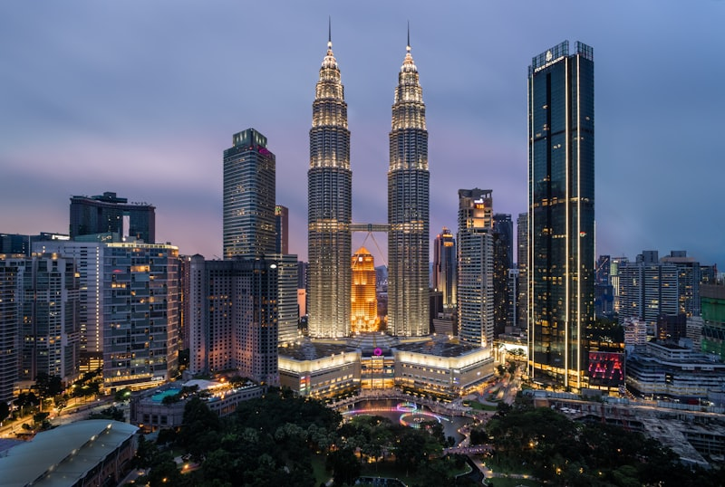
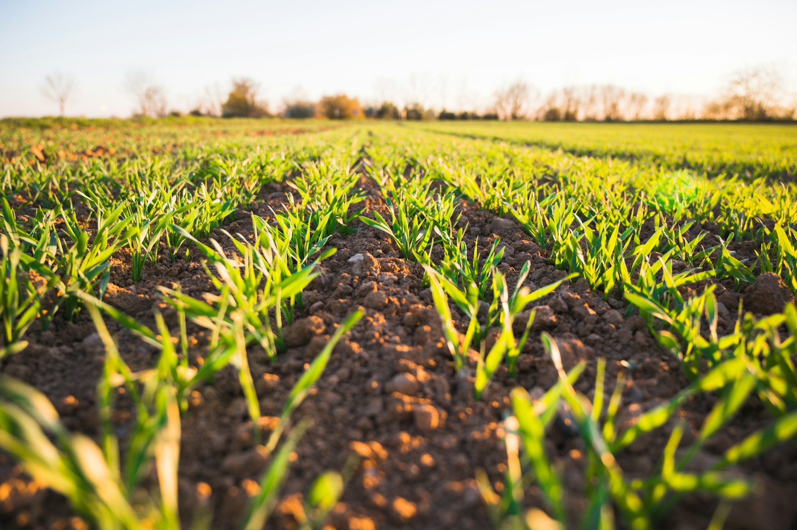
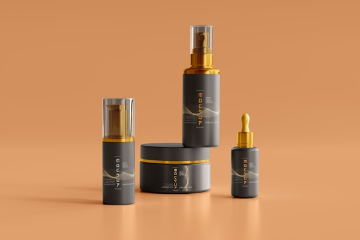
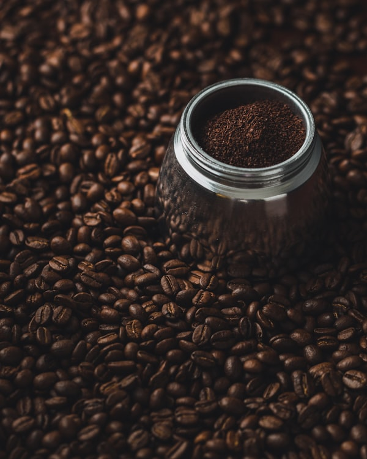
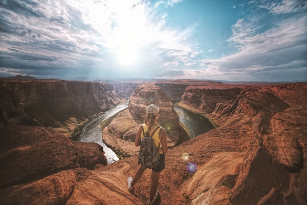

Dusun Krekah
Kenyamanan Natural, Kehangatan Sosial, Potensi Optimal.




Scroll
Kenyamanan Natural, Kehangatan Sosial, Potensi Optimal.



Terletak di lereng perbukitan yang asri, Dusun Krekah adalah sebuah perkampungan yang masih menjaga erat tradisi dan kebersamaan. Alam yang hijau, udara yang segar, dan masyarakat yang ramah menjadikannya tempat kehidupan yang harmoni.
Area bersih dikelilingi vegetasi hijau yang sejuk.
Tingkat gotong royong dan kepedulian sosial tinggi.
Dusun Krekah terbagi atas tiga kawasan blok kewilayahan.
Mencakup pemukiman bagian atas yang terbagi menjadi RT 1, RT 2, dan RT 3.
Mencakup pusat kegiatan kewargaan di zona paruh bawah yang meliputi RT 4 dan RT 5.
Area pemekaran produktif yang difokuskan pada kawasan perbatasan, membawahi RT 6 dan RT 7.
Menjelajahi keunggulan sumber daya alam dan manusia di Dusun Krekah.

Tanah yang subur menjadikan Krekah sebagai salah satu penghasil hasil bumi terbaik dengan tanaman sayur dan palawija.
Produk olahan makanan ringan dan kerajinan tangan lokal yang berupaya merambah pasar lebih luas.

Sebagian besar warga beternak sapi dan kambing untuk menunjang perekonomian keluarga secara berkelanjutan.

Pemandangan yang menyegarkan mata cocok bagi wisatawan yang mencari ketenangan pedesaan otentik.
Dukung dan nikmati hasil karya tangan masyarakat Dusun Krekah.
Kopi robusta dari perkebunan Krekah, disangrai secara tradisional.

Pesan via WAAneka keranjang dan hiasan rumah berbahan bambu lokal pilihan.

Pesan via WAKeripik pisang dan singkong dengan cita rasa gurih tanpa pengawet buatan.
Geser atau tahan untuk melihat galeri visual.



Susunan kepengurusan struktural Dusun Krekah (Klik pada kotak pengurus untuk melihat galeri).
OSKAR
MIKAZE
ORENS
RT 1 - 3
RT 4 - 5
RT 6 - 8
Balita
Remaja
Lansia
Denah tata ruang wilayah pengurusan di Dusun Krekah.